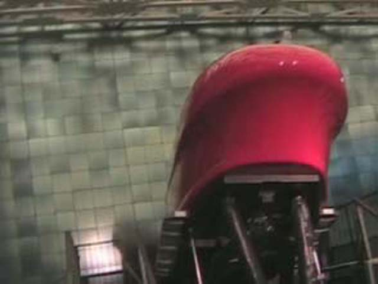

DC/Williamsberg/Knotts Photo TRs
Day 6
Monticello
Today we went to Monticello. It was nice. It was a place I'd like to
live today with the coolness there. I also bought some root beer from
the Monticello gift shop. It was freakin good! Old Fashioned Rootbeer
is In my opinion, alot better than A&W and Bargs. We then went to an
Air & Space Museum back in DC since we had alot of spare time! This
one had a simulator! Yipee! Yay! The ops were nice enough to run the
rollercoaster simulator with the really high program. It was really
good! Although the other one was in 3D, I'd rather have a great program
than 3 Dimensions. The program it ran was powerful emough to have you
slide into the wall thanks to no seat dividers and nothing to keep you
Unlike Star Tours and Back to the Future. Museum simulators seem to have
more powerful programs than theme park ones. At least out of the
simulators I rode its true IMO. We now leave back to California. Well,
At least I'll be at Knotts then. Onto todays photos!
Here we are at Monticello! This place is great!

Heres the simulator we rode!
Day 7
Home